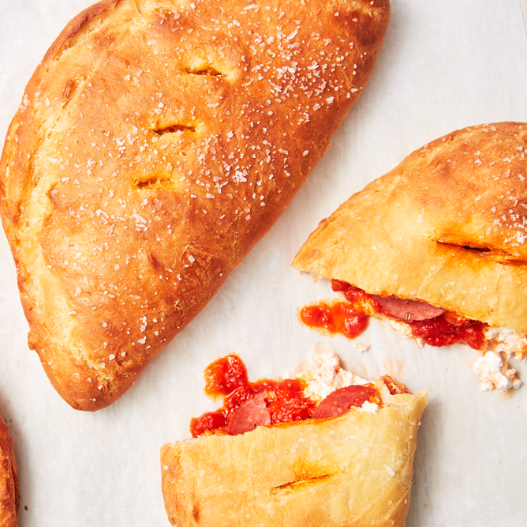

Created by the chief flavor innovators of the 21st century, the calzone originated in Ohio when a dude and his mom decided to change the world forever. The gift that they would bestow upon humanity would go on the feature prominently in film and media, diplomatic relations, athletic events, and much more.
Though only the elite that are members of a D.P. Dough organization are entrusted to replicate The Gift, many mere mortals have tried. While it is often to no avail, some efforts remain rather notable. You, too, can join the ranks of those to come close to enlightenment!
Inspired by this recipe